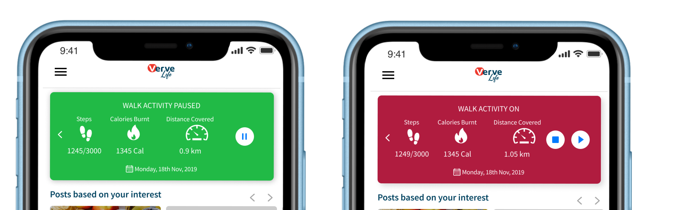

VerveLife App Redesign - Your Fitness & Wellness Companion
The VerveLife App is a fitness and health app powered by the Verve Debit Card brand in Nigeria. The app also had payment features for financila transactions, bill payment, ATM withdrawals, airtime purchase and in-app purchases. The app is a combination of health, fitness and payments.
Primary users: Fitness enthusiasts who own a smartphone with an internet connection. Anyone looking to dedicate their time to personal fitness development. Team fitfam, looking forward to healthy meals and prepation tips.
Secondary users: Fitness enthusiasts who also own a smartphone with an internet connection and are not only dedicated to improving personal fitness but willing to teach, coach, or mentor others towards achieving personal fitness goals by uploading content.


The Redesign Process
The Problem
- 1. Difficult onboarding process.
- 2. Difficlt user flow for payments.
- 3. Users struggled to use the fitness feature on the app.
- 4. Give users value for using all the features on the app.
- 5. Design a seamless experience for users and all the features on the app
Redesign Goal
- 1. Replace the e-Cash card with a fitness activity card.
- 2. Update icons on the tab bar to reflect a fitness and payment app.
- 3. Simplify navigation and transition by replacing the play button with a running man silhouette.
- 4. Bring content to the forefront and eliminate unnecessary steps.
- 5. Prioritize deal, verve offers, and in-app fitness post overview to enhance user engagement
- 6. Add visuals to build user trust and reduce cognitive overload.
- 7. Bring content to the forefront and eliminate unnecessary steps.
- 8. Prioritize deals and activity feature.
The New Interface

Behold a new UI: new look and feel
The new version of VerveLife now looks like a fitness app with redesigned and updated features from a fitness activity tracker to allow users to connect with other fitness enthusiasts, daily motivation, healthy eating tips, meal plans, offers/deals nearby, and most of all, be able to make quick & easy payments.
Home Screen
The user now sees a fitness activity tracker screen showing the active time, calories burnt, distance, and heartbeat rate. This lets the user monitors his or her progress. The focus was on performance and reliability, allowing users to truly engage with the app.

Posts based on interest
The user gets to see posts based on his or her interest depending on what the user selected as his/her interest at the time of setting up an account. I used a card sorting user interface in a carousel so the user can easily swipe through contents.

Verve offers
Our goal was to create a page where users can use the payment solution via a feature called Verve Offers. Verve offers showcases special offers with discounts around you which you can find and take advantage of when paying with e-cash. e-cash is basically an e-wallet and users can enjoy discounts via offers and pay for these offers using their e-cash.

Task bar
The new taskbar now has ‘Launch activity’, ‘deals’, and ‘wallet’ added to it. Clicking on launch activity allows the user to set an activity. From walking, running, cycling, etc. Deals icon shows you current discounts and offers for food & drinks or travel, where you can find it, and how many days left on these deals.

Pause, Stop, Play...
The new update feature allows the user to pause, stop, or play (continue). The new feature makes it easy to experience all 3 actions in one view compared to the old flow which navigates the user into other pages.
Deals near me
The UI gives the user the ability to search and see deals from food, drinks, travel, and find where these deals can be redeemed. We automatically condense cards to scroll vertically so users can see how many deals there are on the app. There is also a floating button ‘deals near me’ so users can see on the map, deals not more than 300 yards away.

Activity and Meal plan setup
The meal plan allows the user access to suggested meal plans, my plan, and plans shared by the public. Suggested plans you receive are plans shared by admin or food enthusiast.
My plans are meal plans set up by the user while the public is for plans made by anyone on the app. This helps make one-on-one and group health nutrition easier to follow. It also helps you commit to a meal plan depending on the nutritional goal.
.png)


- 1. Sole designer: I was the only designer on this project as a result of owning the entire design process and leading the team.
- 2. User research: I conducted both usability test and competitor research sampling four major fitness apps like Nike run, Google fit, Samsung health app, My plate, and google maps for the purpose of understanding how the picture in picture feature works.
- 3. Usability testing: This was done using the qualitative research mwthod. During the product review processes, I visited different gyms at various times where I tested out the prototype and I observed different users of both genders, male and female studying the interaction, flow, pain points, and used that observation to update my design where needed.
- 4. Team lead: I ‘assumed’ the role of product team lead since I was the only designer, I constantly met with the frontend and back end developers working as a team to ensure the UI design is followed diligently as I had given a great handoff.


Design, Prototype and Testing
Figma was used for the entire design, from the wireframing, interactive prototype, and testing making sure that the final design followed the current mobile design trends. An in-house test was done with users to see if there were any more opportunities for improvement. Sometimes the same users are used to test each the redesign/update process for feedbacks.

Result
The response we got from our users was that it now looks like a fitness/health app, easier and more intuitive to navigate, improved UI experience and no confusion/rivalry with the Verve World app. Users also welcomed the new deals/offer feature.

You can view the Vervelife app here - Vervelife App